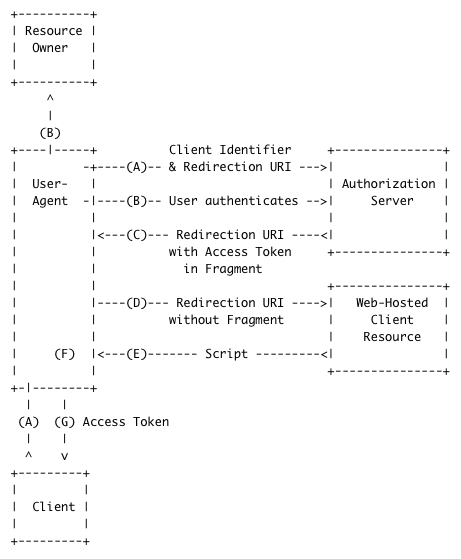

Securing APIs LnL Notes
Overview
- Possible Title: Tokens! Securing APIs for Single-Page Apps with JWT and OAuth 2
- Possible Title: Securing APIs for Single-Page Apps with JWT and OAuth 2
- Possible Title: Securing APIs: Token-Based Authentication with OAuth 2
- Possible Title: Securing REST APIs: Token-Based Authentication
- Possible Title: Token-Based Authentication for Securing APIs
- Securing distributed systems
- A few different types (HTTP Basic over TLS, NTLM, OAuth 2)
- Securing microservices with OAuth 2 (We don't want to require each service to have a request handler for authentication/authorization. Overview diagram of how implicit flow works)
- Demo: OAuth 2.0 Implicit Grant Flow using JWT Access Tokens using Node.js and Java

Resources
JWT Articles
Additional Articles
Topics
- The purpose of the token is to make it unnecessary for the resource owner to share its credentials with the client.
- Denver/UberConf overview (Talks by Brian Sletten: Identity, Privilege)
- Identity, Federated Identity
- HTTP Basic alone is not secure
- Privilege
- Confused Deputy Problem, and compiler system privilege example from Privilege talk at UberConf 2016
- Valet Key Pattern. Blog describing the valet key metaphor. This is another article that describes the valet key metaphor, where the token is like the valet key.
- Microservices
- TLS is more secure than SSL
- Token-based authentication
- Using tokens in the place of session IDs
- It is not secure to store API keys in your JavaScript. With a JavaScript app all requests come from the client which is the same place where all the code is stored which means if you store your API key in a JavaScript web app you might as well just print it out in big bold letters across the homepage as the whole world now has access to it through their browser’s dev tools.
- Oauth 2 is not an authentication protocol, and it is not an authorization protocol. It is a delegation protocol (Include power-of-attorney analogy) (podcast: The user delegates access to app so that it can access resources. The resource server can still reject the request!!)
- One of the main goals of OAuth 2: Give the client access to the protected resource on behalf of the resource owner.
- OAuth 2 description (from the spec): The OAuth 2.0 authorization framework enables a third-party application to obtain limited access to an HTTP service, either on behalf of a resource owner by orchestrating an approval interaction between the resource owner and the HTTP service, or by allowing the third-party application to obtain access on its own behalf.
- Explain how OAuth 2 is different than typical client-server authorization. See this article.
- Stateless authentication with OAuth 2 and JWT
- Stateless tokens
- JWT / JOSE
- JWT signing by Authorization Server (OAuth server) using private key. Resource server can verify access token is valid.
- JWT works by simply encoding a string made up of a small JSON object and hashing it using a secret shared between the two parties. The algorithm is configurable, but is usually HMAC SHA-256.
- Passport???
- Security issues with storing API key in JavaScript
- Token-based credentials provide higher entropy and a more secure form of authentication and authorization than Username Password Credentials
- Scopes are granted by the Authorization Server and stored in an access token.
- With token-based credentials, the Identity Provider issues tokens based on an initial authentication request with username/password credentials. From then on, the app only has to send the token.
- Tokens are generated for your users after they present verifiable credentials. The initial authentication could be by username/password credentials, API keys or even tokens from another service.
- Once generated, the token is attached to the user via a browser cookie or saved in local/session storage.
- Using tokens in a mobile app allow you to easily and securely control which mobile devices are accessing your API.
- A JWT is a compact, URL-safe, encryptable JSON object that is rapidly becoming the standard for token implementation across the web.
- Libraries used by teams: System.IdentityModel.Tokens.Jwt
- Passport for front-end OAuth 2
- OAuth 2 in Action, Chapter 11 "OAuth Tokens" contains a good description of the different types of tokens such as tokens that act like a handle to information in a database, and structured tokens like JWTs.
The AS can issue single access token for multiple RS's!
Assuming your system has a single AS, the scopes concept allows you to handle multiple RS's. You could define a scope per API and have clients ask for one or both scopes. Access tokens are issued on a per-client basis, so handing out different access tokens to the same client doesn't bring you any security advantage unless the two APIs are controlled by different entities.
JSON Web Tokens (JWTs or "jots")
- The signature is calculated by base64url encoding the header and payload, concatenating them with a period as a separator, and digitally signing the result. The signature is then base64Url encoded and appended to the end (after the last period).
JWTs and Stateless Authentication
In authentication, when the user successfully logs in using their credentials, a JWT will be returned and must be saved locally, instead of the traditional approach of creating a session in the server and returning a cookie.
Whenever the user wants to access a protected resource, the user agent should send the JWT, typically in the Authorization header using the Bearer schema.
This is a stateless authentication mechanism as the user state is never saved in server memory. This allows you to fully rely on data APIs that are stateless and that even make requests to downstream services.
Implicit Grant Flow
- The redirect_uri should match the redirect URI that was originally specified when registering the client.
- The AS redirects the RO's browser to another destination (via HTTP 302 Found).
- To protect against the "confused deputy problem" and determine if the token is intended for your application and was produced by the other distributed application, you must verify its authenticity and legitimacy by issuing an additional request to the other distributed application. See this article.
- In the Implicit Grant type, the client is running within the browser.
- See Chapter 6 in OAuth 2 in Action
Implicit Grant Flow Sequence Diagram
- Include vertical lines for: Client, AS, RS
- Add RO (cartoon user) to left of sequence diagram
- Under RO, include a rectangle that represents current state of the user agent (browser)
- Explicitly state that the client asks for a scope or multiple scopes!
Identity
- The Identity Store (for example Active Directory) contains the user data. An Identity Provider is a service that exposes this information.
- When each service has its own request handler for performing authentication and authorization, it means each service is acting as an Identity Provider, rather than using a single Identity Provider service. This violates the Single Responsibility Principle.
Principle of Least Privilege
- Present overview. Give example of service representative only being allowed to access customer data for the duration of the phone call.
- OAuth 2.0 Scopes: Something like EMAIL_SERVICE is too generic. It means the user is given too much authority.
- OAuth 2.0 Scopes: More fine-grained (EMAIL_READ, EMAIL_DELETE, EMAIL_POST, EMAIL_MOVE, etc.) allows clients to use minimal authority to access the user's mailbox without requiring full access. The core functionality of your service can be expressed as scopes!!
- Allow a client to do something on the RO's behalf, without providing personally identifiable information to the client.
Slides
- Overview
- UberConf 2016 overview (security, microservices, etc.)
- What is Token-Based Authentication?
- Securing APIs (Overview of options for securing APIs)
- What is OAuth 2.0? (definition from spec, valet key metaphor, etc.)
- OAuth 2.0: Include content from Ch. 11!! (The client does not need to know anything about the token itself...) (OAuth 2 does not specify the token format... It provides flexibility!!)
- Securing APIs for Single Page Apps (Implicit Grant flow)
- Implicit Grant Flow Sequence Diagram
- Slide discussing query parameters (response_type=token, client_id, redirect_uri, scope, state). See this article.
- JSON Web Tokens (arcade token visuals, etc.)
- JSON Web Tokens (Create nice diagram of header, payload, and signature. Show how signature is base64Url-encoded and appended to the end. Mention: The output is three Base64 strings separated by dots that can be easily passed in HTML and HTTP environments, while being more compact when compared to XML-based standards such as SAML.)
- JSON Web Tokens (Demo of jwt.io Debugger)
- Lunch (Distributed) System Data-Flow Diagram
- Demo
Demo
- OAuth 2.0 Implicit Grant Flow
- JWT Access Tokens
- Spring Boot is an application-bootstrapping framework that helps with the creation of Spring based applications with no necessary XML configuration or code generation.
- Spring Security OAuth 2 Authorization Server
- Resource Server (Lunch Items REST API): C# or Node.js
- AngularJS/sass/materialize??? client
- User as the Resource Owner
- In Implicit Grant Flow, the client secret is not used, as it cannot be kept confidential by a JavaScript app running in the browser. (Can be decompiled, source code inspected, etc..)
First, implement node.js/express.js Implicit Grant Flow example from OAuth 2 in Action, and then modify it to use the Spring Boot Authorization Server (AS) to issue JWT access tokens.
Slides: Interesting Visuals
- Because tokens are so important in OAuth, the unofficial OAuth logo is modeled after a bus token. (See OAuth 2 in Action, "11.1 What are OAuth Tokens?")
- Tokens for arcade games... (Include .mp3 of 80's ambient arcade noise? Include game cabinets image. Include token machine image and tokens image.). Insert tokens in order to be granted limited access to the game. You can play the game, but you cannot reset the high scores, etc..
- Slugs. (Show electrical box image.) Lore around my small school was that you could use slugs to trick the machine into letting you play the game. It exploited a system vulnerability. At an abstract level, you were forging an access token. (Might use this to segue into JWT signing with private key so that the resource server knows the access token has not been forged...)
- Include an image of a luxury car and a car key. OAuth 2 in Action describes the analogy of a the valet key, where a car owner can grant limited access to the vehicle.
-
- Limited access as opposed to impersonating the resource owner. When pairing, you will give your partner limited access to Outlook (like checking calendar for retro meeting), but you would not allow them to send emails impersonating you...
OAuth 2
OAuth 2 is an authorization framework that enables applications to obtain limited access to user accounts on an HTTP service, such as Facebook, GitHub, and DigitalOcean. It works by delegating user authentication to the service that hosts the user account, and authorizing third-party applications to access the user account. OAuth 2 provides authorization flows for desktop apps, web apps, and mobile apps.
OAuth's Four Main Actors
OAuth has four main actors:
- Resource Owner (RO): The user
- Client: The web or mobile app
- Authorization Server (AS): The OAuth 2.0 server
- Resource Server (RS): Server providing resources
To better understand the OAuth 2.0 Framework, it is important to realize that the client communicates with the authorization server in two distinct ways: via the back channel and via the front channel. The back channel is the direct communication between the client and the token endpoint, whereas the front channel is the indirect communication between the client and the authorization endpoint via the user's agent and based on HTTP redirects. Therefore, the front channel has some significant limitations. Since it's based on redirects, it imposes restrictions on the HTTP features that can be used. The request method must be a GET, and the request information must be passed in the request URI, namely in the URI's query string.
Simplified Example of an OAuth 2 Flow
- The Client requests access to the Resource Server by calling the Authorization Server.
- The Authorization Server redirects to allow the user to authenticate, which is usually performed within a browser. This is essentially signing into an authorization server, not the app.
- The Authorization Server then validates the user credentials and provides an Access Token to client, which can be used to call the Resource Server
- The Client then sends the Token to the Resource Server
- The Resource Server asks the Authorization Server if the token is valid.
- The Authorization Server validates the Token, returning relevant information to the Resource Server i.e. time till token expiration, who the token belongs to.
- The Resource Server then provides data to the Client.
OAuth 2.0 Spec Highlights
OAuth 2.0 Validating Tokens
- A very common OAuth deployment pattern is using a shared database for the AS and RS.
- There’s a standardized web protocol called Token Introspection that the authorization server can offer, allowing the resource server to check the token’s state at runtime.
Protecting a web API with OAuth
Protecting a web API with OAuth is fairly straightforward:
- The token gets parsed out of the incoming request.
- The token is validated with the authorization server.
- The response is served based on what the token is good for.
OAuth Scopes
Information about serving user-specific data can be found in the following section of OAuth 2 in Action: Different users for different data results. In the demo project, resources (lunch items) can be associated with specific employeeId values!! (This is a very powerful design pattern, as it can protect the resource owner’s privacy by not revealing personally identifying information unnecessarily.)
A scope is a permission.
Figuring out what scopes to expose is a responsibility of an application developer, and it may be confusing at first:
- Do I expose a single scope protecting the entire service, or do I expose scopes to protect fine-grained business functionality of my application?
- Do I break up my service into many smaller services with one scope each, or do I build multi-functional service with multiple fine-grained scopes?
- How do I balance the needs of my clients to request specific capabilities and the needs of my application owners to manage appropriate policies?
General OAuth 2 Resources
Using OAuth 2.0 (Slack)
HMAC-SHA256
- Signature vs. HMAC
- MACs differ from digital signatures as MAC values are both generated and verified using the same secret key. This implies that the sender and receiver of a message must agree on the same key before initiating communications, as is the case with symmetric encryption. For the same reason, MACs do not provide the property of non-repudiation offered by signatures specifically in the case of a network-wide shared secret key: any user who can verify a MAC is also capable of generating MACs for other messages. In contrast, a digital signature is generated using the private key of a key pair, which is asymmetric encryption. Since this private key is only accessible to its holder, a digital signature proves that a document was signed by none other than that holder. Thus, digital signatures do offer non-repudiation. However, non-repudiation can be provided by systems that securely bind key usage information to the MAC key; the same key is in possession of two people, but one has a copy of the key that can be used for MAC generation while the other has a copy of the key in a hardware security module that only permits MAC verification. This is commonly done in the finance industry.
- in order to verify an HMAC, you need to share the key that was used to generate it. You would send the message, the HMAC, and the receiver would have the same key you used to generate the HMAC. They could then use the same algorithm to generate an HMAC from your message, and it should match the HMAC you sent. Public/private keys (assymetric) are not used for this. You need to generate a symmetric key (like AES) and securely share that with the people that will be generating/verifying the HMAC.
Blurb
- Learn techniques and technologies for guarding protected resources in systems composed of multiple distributed HTTP services.
{kind=link}
{kind=link}